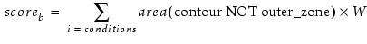
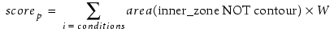

Scoring failures
allows you to rank all failures by their score, and thus prioritize
what needs to be fixed. There is a exponential behavior of bridging
and pinching with respect to dose at a fixed focus condition. This
property can be used to help define a failure score for bridging
and for pinching.
If the bridging score is:

Then the pinching score is:
